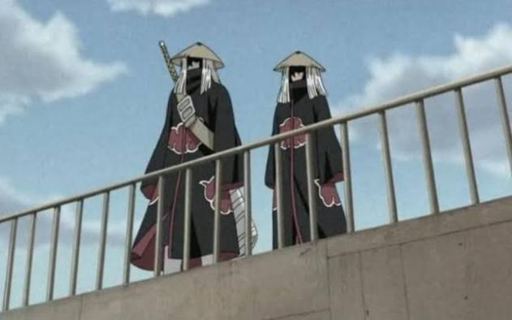
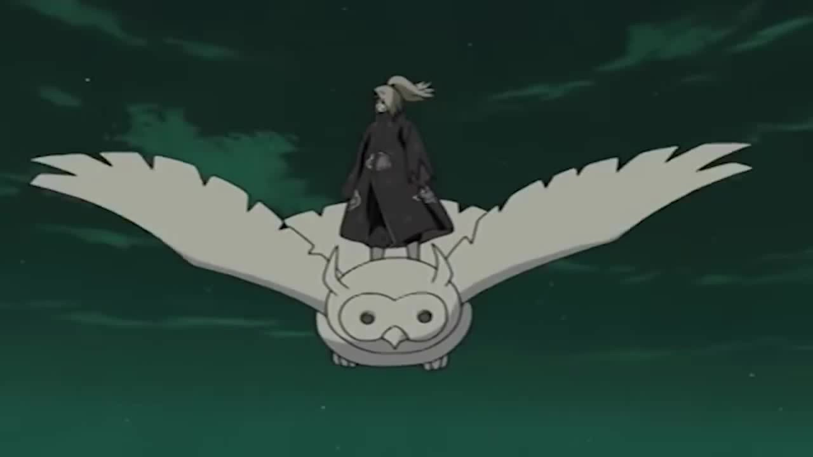

Relatórios do submundo confirmam que a antiga liderança de Hanzō da Salamandra foi derrubada. Sob o comando de Pain, a Vila Oculta da Chuva isolou totalmente suas fronteiras e declarou neutralidade forçada nas guerras ninjas.
Mais Lidas

Movimentações suspeitas no País do Fogo
Itachi Uchiha e Kisame Hoshigaki foram avistados perto das divisas de Konoha. A ANBU emitiu alerta amarelo.

Ataques de arte explosiva na Vila da Pedra
Deidara causou destruição em instalações locais antes de oficializar sua entrada no grupo renegado.